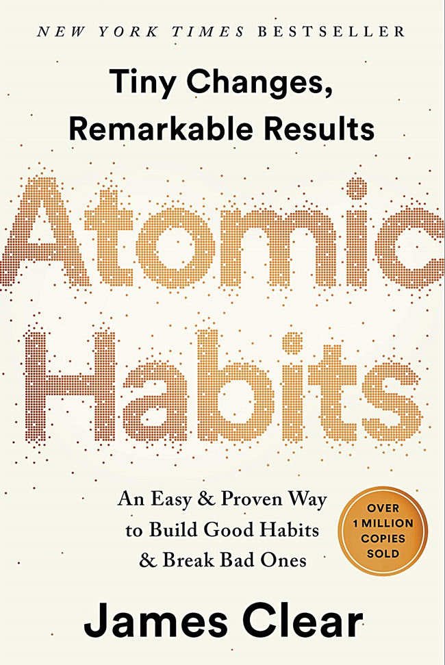

Atomic Habits menjelaskan bagaimana perubahan kecil yang dilakukan secara konsisten dapat menghasilkan hasil yang sangat besar dalam kehidupan. Buku ini membahas cara membangun kebiasaan baik, menghilangkan kebiasaan buruk, serta meningkatkan produktivitas melalui langkah-langkah sederhana yang bisa diterapkan setiap hari. Buku ini sangat populer karena memberikan strategi praktis untuk memperbaiki diri secara bertahap namun efektif.